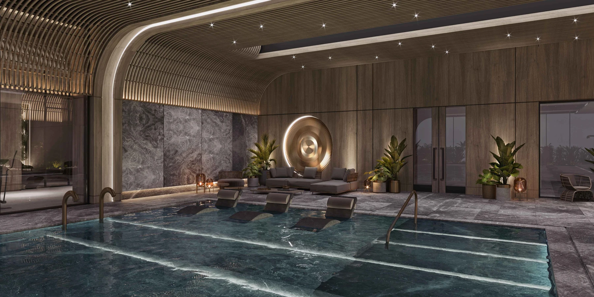

DAP Yeni Levent
A residential development in the Levent area bringing garden and terrace apartment concepts together with landscaped outdoor spaces. Its design comprises sixteen blocks and shared leisure facilities.
Photo gallery

Gallery includes project photographs and architectural illustrations; each image is labelled separately.
Living spaces
The published design includes three outdoor pools, an indoor pool, fitness facilities, sauna and steam bath. Real outdoor photographs are included alongside architectural illustrations.
Huzur · Sarıyer · Istanbul
Huzur Mahallesi, İbrahim Karaoğlanoğlu Caddesi, Cesur Sokak, Sarıyer. The official location information highlights connections to Büyükdere Caddesi and the Levent area.
Choose your home
Request the current apartment selection, price and payment options. Compare the exact unit, view and included services before arranging your purchase.